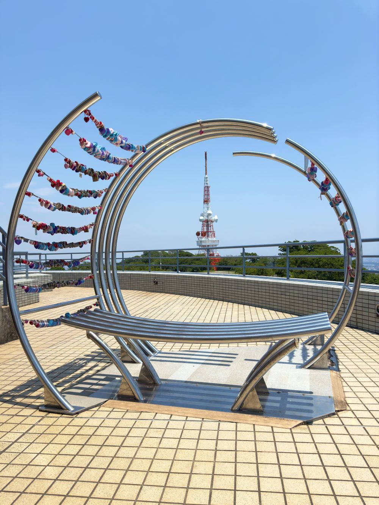

湘南平
湘南平は360度のパノラマから「かながわの景勝50選」や「夜景100選」など多くの指定を受ける、平塚屈指の人気スポットです。テレビ塔展望台とレストハウス展望台の2つの大展望台があり、相模湾や富士山をはじめとする近隣の山々の眺望を楽しむことができます。また、天気の良い日には江の島や三浦半島、伊豆半島が見え、沖には大島を見ることができます。日没後は、夜のドライブで訪れる人も多く、日中とは一変した夜ならではの景観を楽しむことができます。他にも、絶景とともに地元食材にこだわった料理を楽しむことができる「海の上テラス」や本場ハワイオワフ島の味を楽しむことができる「ホノルル食堂」などもあり、多くの人に愛される人気スポットとなっています。
{kind=link}
フォトギャラリー
-
- LUISE ONO(オノルイーゼ)さんの
アート作品 - レストハウス展望台3階の展望台スペースとテレビ塔付近の休憩スペースには、平塚市出身のペインター「LUISE ONO(オノルイーゼ)」さんのアート作品が描かれています。
- LUISE ONO(オノルイーゼ)さんの
-

- モニュメント「ainowa(あいのわ)」
- 恋人たちが愛を誓って南京錠をかける「愛の南京錠」発祥の地とも言われており、展望スペースには南京錠を掛けることができるモニュメント「ainowa(あいのわ)」が設置されています。
-
- テレビ塔展望台
- レストハウス展望台とはまた少し違った雰囲気と景観を楽しむことができる展望台です。赤いテレビ塔は離れた場所からでも目立つため、湘南平のシンボルの1つとしても親しまれています。
-
- 岡野金次郎記念碑
- 日本人登山家として初の槍ヶ岳への登頂を果たすなど、日本山岳会の先駆者とされる登山家「岡野金次郎」は平塚市在住であり、その功績を称える記念碑が建てられています。
-
- 海の上テラス
- 海の上テラスは「五感を通して幸せを感じてもらう」をコンセプトとしたカフェ＆レストランです。絶景とともに、ここでしか味わえない特別なメニューを楽しむことができます。
-

- ホノルル食堂 Aloha Market
- ホノルル食堂Aloha Marketでは、ハワイアンフードから元祖湘南名物「マラサダドーナツ」などがあり、テイクアウト後は絶景を楽しみながら召し上がることができます。
{kind=link}
{kind=link}
{kind=link}
{kind=link}
{kind=link}
アクセス
【住所】〒254-0913 平塚市万田790番地
【営業時間】海の上テラス：10時30分～17時00分（土日は9時30分～19時00分） ホノルル食堂：10時30分～17時00分
【アクセス】バスでお越しの際：平塚駅北口3番線から、平35系統で「湘南平」下車。（約23分）